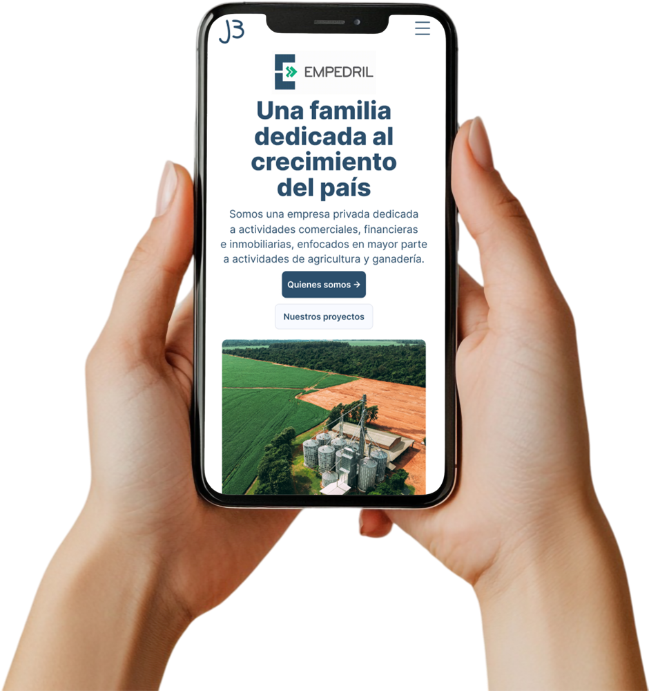

Digital · shipped and live
Four websites, one client group, still running.
Since March 2024 Grupo BOGA has trusted me with the sites for four of its companies. On each one I did the research and structure, designed it in Figma, then built and launched it in Framer myself. I still maintain them.

Automotor
Multi-brand vehicle group · live since 2025
Nine vehicle brands and three kinds of visitor shared one homepage organized around the company’s internal structure. I mapped who actually arrives (buyers, owners who need a service or a part, and authorized workshops) and rebuilt the navigation around what each came to do.
The decision I’d defend: navigation named by intent, not department, with the two logins kept separate.
Outcome
21 branch pages across four cities, built so a marketing team with no developer can maintain them. I still publish their promotions and keep the vehicle range current.
Since launch: [bookings, calls or traffic to Servicios]
My role: sole designer, from research and IA through UI and the Framer build
Live: automotor.com.py ↗
Read the case study

Empedril
Agribusiness · live since February 2024
A Paraguayan company in livestock, agriculture and real estate, farming the same land since 1971. The developer quit just before launch, so I taught myself Framer and rebuilt months of design work live in 24 hours. It launched on February 6, and I haven’t handed off a build since.
The decision I’d defend: no generated imagery. The site’s argument is “this land is ours,” so it runs entirely on photographs of the company’s own fields.
Outcome
The launch that started the relationship. Three more of the group’s companies followed.
[what changed for Empedril]
My role: sole designer, from structure and UI through the Framer build
Live: empedril.com.py ↗